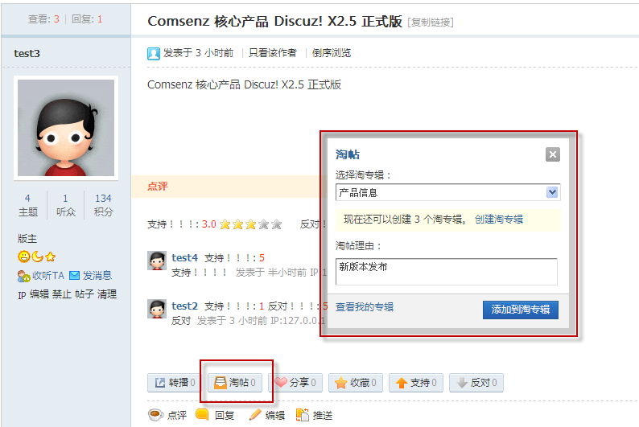
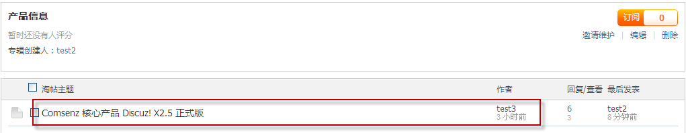

淘帖
淘帖功能主要是方便会员对帖子进行分类收藏，将相近帖子制成专辑，扩展内容的深度，同时也能分享自己的淘专辑给更多论坛网友，实现了论坛帖子的收藏与分享价值。下面我们看下淘帖功能是如何使用的：
当在论坛上看到感兴趣的帖子时，点击淘帖
然后会弹出如上图的框，选择或创建淘专辑，提交，主题将会添加到相应淘专辑，在专辑显示如下:
淘帖功能首页专辑分为三类，分别是：推荐专辑（系统推荐专辑）、所有专辑、我的专辑（用户自己创建的专辑与订阅的淘专辑）
向作者推荐主题:当看到有符合这个专辑的优秀主题时，可以向作者推荐主题，填写主题地址，向此专辑的创建者推荐主题，创建者将收到消息，查看此帖后决定是否将此帖加入专辑
评价淘专辑:对此专辑进行评论评分，选择星星数与填写评论对专辑进行评论
订阅:订阅此专辑会将此专辑放到我的专辑下，方便查看
创建淘专辑：创建新的淘专辑，填写淘专辑名、简介与淘帖关键词创建即可
编辑淘专辑：对专辑进行编辑修改
删除淘专辑：删除此专辑
邀请维护：邀请自己好友维护专辑，只能邀请好友且最多三位
删除主题：专辑的创建者可以将聚合到的不符合的主题删除掉